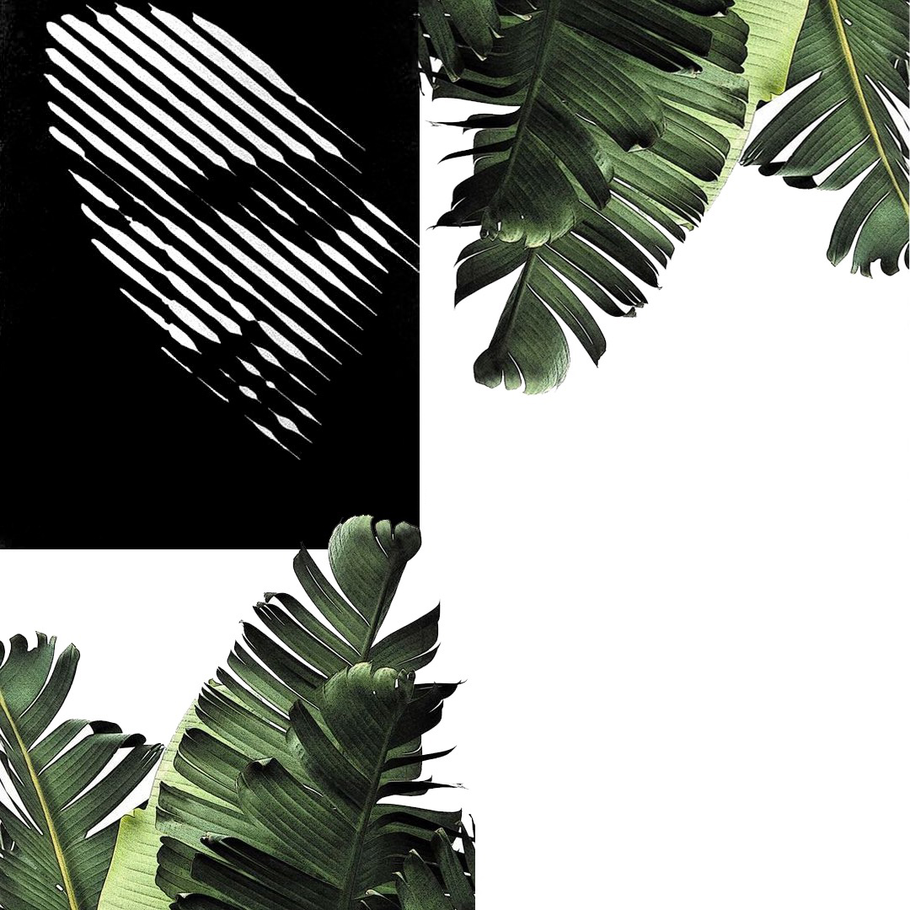

About Me!

My name is Canies Bianca Nelson but most people call me by my middle name, Bianca. I'm from Philadelphia and I've been obsessed with the idea of using my imagination to create things since before I can remember. I'm talking like 3 years old! I started Fleisher Memorial Art School at 6 and I absolutely loved it there. I stayed at Fleisher until my third year of highschool where our main focuses were Architecture and all forms of Design. I went to Penn State University studying Pyschology and Liberal Arts. At Penn State I took a few Graphic Design courses and as soon as I was finished Penn State I went to The Arts Institute of Philadelphia to become a Graphic Designer. I was well known in Philadelphia and New York for doing a lot of freelance design work for artists, local to mainstream and companies from Power 99 to Atlantic Records. I specialized in logo design, promotional packages, comp cards, fliers, album covers, and web design. All of this certainly came full circle about six months ago when I decided to enroll in University of Penn's LPS Coding Bootcamp Full Stack program! This program literally changed the course of my life. It gave me a whole new set of skills that sent me into overdrive! I struggled and fought for this this skill-set and it has truly become my passion. I learned so many things from designing beautiful layouts to developing a complex systems. I cant wait to continue to sharpen my skills and build even more beautiful things! I’m looking forward to bringing all of that passion to a full-time role. Check out my portfolio https://github.com/Canies ! Feel free to contact me at CaniseNelson@gmail.com